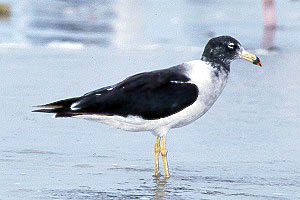
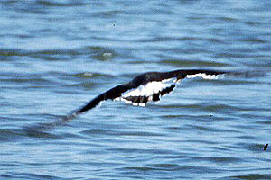

| These photographs accompany records that have been recently submitted to the committee. This record
has been ACCEPTED.  Belcher's Gull Larus belcheri 10 Aug 97, Imperial Beach, SD 1997-120 ©1997 Larry Sansone  Belcher's Gull Larus belcheri 22 Aug 97, Imperial Beach, SD 1997-120 ©1997 Don Roberson Back to CBRC Rare Bird Photos |